Länderkontextabhängige ER-Modellzuordnungen konfigurieren
[!include[banner](../includes/banner.md)]Sie können Electronic Reporting (ER) Modellzuordnungen so konfigurieren, dass sie ein generisches ER-Datenmodell implementieren, aber spezifisch für Dynamics 365 Finance sind. In diesem Thema wird erläutert, wie Sie mehrere ER-Modellzuordnungen für ein ER-Datenmodell entwerfen, um zu steuern, wie sie von entsprechenden ER-Formaten verwendet werden, die von Unternehmen mit unterschiedlichen Länder-/Regionalkontexten betrieben werden.
Voraussetzungen
Um die Beispiele in diesem Thema abzuschließen, müssen Sie den folgenden Zugriff haben:
Zugriff auf Finance für eine der folgenden Rollen:
- Entwickler für elektronische Berichterstellung
- Funktionaler Berater für elektronische Berichterstellung
- Systemadministrator
Zugriff auf die Instanz von Regulatory Configuration Services (RCS), die für den gleichen Mandanten wie Finance für eine der folgenden Rollen bereitgestellt wurde:
- Entwickler für elektronische Berichterstellung
- Funktionaler Berater für elektronische Berichterstellung
- Systemadministrator
Einige Schritte in diesem Thema erfordern die Ausführung eines ER-Formats. In einigen Fällen wird die Ausführung eines ER-Formats durch den Länder-/Regionalkontext des Unternehmens beeinflusst, bei dem Sie derzeit angemeldet sind. Sie können ein ER-Format in der aktuellen RCS-Instanz ausführen, wenn die Firma, die den erforderlichen Länder-/Regionskontext hat, im RCS verfügbar ist. Andernfalls müssen Sie eine fertige Version der ER-Modellzuordnung und ER-Formatkonfigurationen, die das ER-Datenmodell verwenden, in Ihre Finance-Instanz hochladen und dann das ER-Format in dieser Finance-Instanz ausführen. Informationen zum Importieren von Konfigurationen, die sich im RCS befinden, in eine Finance-Instanz finden Sie unter Importieren von Konfigurationen aus RCS (This is an external link).
Einzelmodell-Zuordnung Fall
Führen Sie die Schritte in Anhang 1 zu diesem Thema aus, um die erforderlichen ER-Komponenten zu entwerfen. Sie haben nun die Zuordnung (Allgemein) Modellzuordnungskonfiguration, die das Modellzuordnung für die Definition Eingangspunkt 1 enthält.
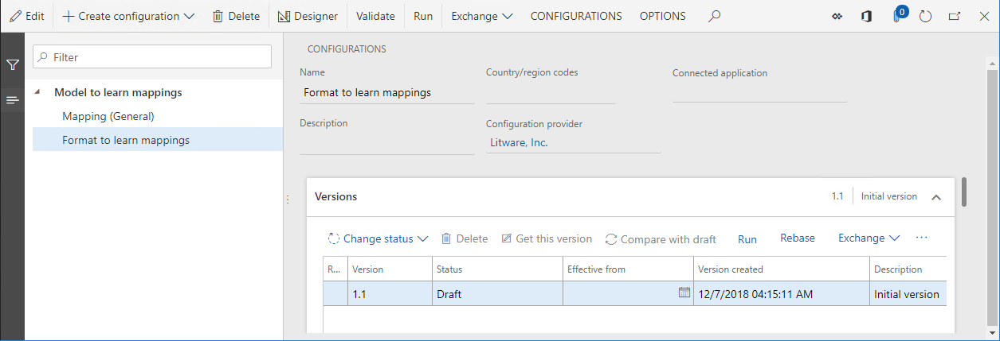
Ausführen des konfigurierten Formats
- Wählen Sie auf der Seite Konfigurationen, auf der Seite Versionen Inforegister Ausführen.
- Wählen Sie OK.
Beachten Sie, dass der Webbrowser anbietet, die Textdatei herunterzuladen, die durch das ausgeführte ER-Format erzeugt wurde. Da dieses Format für die Verwendung der Definition Eingangspunkt 1 konfiguriert wurde und für das Basismodell derzeit nur ein einziges Modellmapping verfügbar ist, das ein Zuordnung für diese Definition enthält, verwendete das ausgeführte ER-Format das Zuordnung (Allgemein)-Modellmapping der Konfiguration Zuordnung (Allgemein) als Datenquelle. Daher enthält die heruntergeladene Datei den Text Generische Funktionalität 1.
Fall von mehreren gemeinsamen Modellzuordnungen
Führen Sie die Schritte in Anhang 2 zu diesem Thema aus, um die erforderlichen ER-Komponenten zu entwerfen. Sie haben nun Zuordnung (Allgemein) und Zuordnung (Allgemein) benutzerdefinierte Modellzuordnungskonfigurationen, von denen jede die Modellzuordnung für die Definition von Einstiegspunkt 1 enthält.
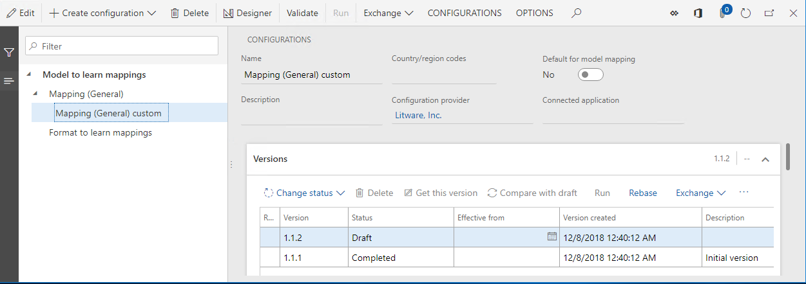
Ausführen des konfigurierten Formats
- Wählen Sie auf der Seite Konfigurationen im Konfigurationsbaum Format, um Zuordnung zu lernen.
- Wählen Sie im Inforegister Versionen Ausführen aus.
- Wählen Sie OK.
Beachten Sie, dass die Ausführung des ausgewählten ER-Formats erfolglos ist. Eine Fehlermeldung informiert Sie darüber, dass es mehr als ein Modellzuordnung für das Modell zum Erlernen von Zuordnungs Modell und den Einstiegspunkt 1 Definition in den Konfigurationen Zuordnung (Allgemein) und Zuordnung (Allgemein) benutzerdefiniert Modellzuordnung gibt. Die Meldung empfiehlt auch, dass Sie eine dieser Konfigurationen als Standardkonfiguration auswählen.
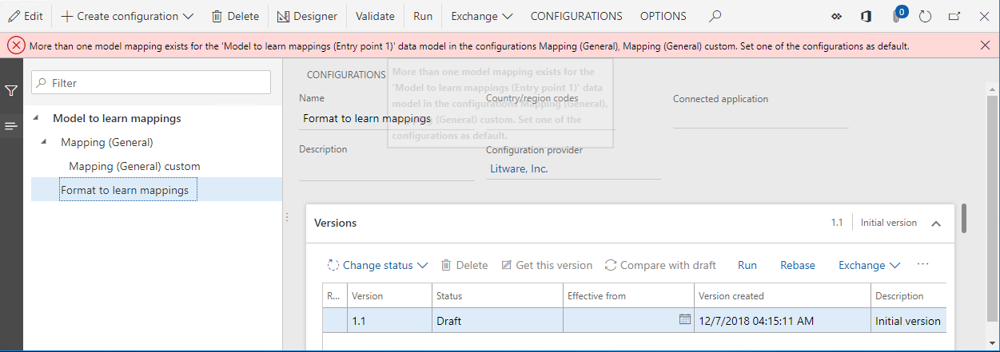
Definieren Sie eine Standardzuordnungskonfiguration.
Führen Sie diese Schritte aus, um die Konfiguration Zuordnung (Allgemein) custom Modellzuordnung als Standardkonfiguration zu definieren, so dass ihre Zuordnungen als Datenquellen für das ER-Format Format verwendet werden können, um Zuordnungen zu lernen.
- Wählen Sie auf der Seite Konfigurationen im Konfigurationsbaum Zuordnung (Allgemein) benutzerdefiniert.
- Wählen Sie bei Bedarf Bearbeiten, um die aktuelle Seite für die Bearbeitung bereit zu machen.
- Hier können Sie die Option Standard für Modellzuordnung auf Ja festlegen.
- Wählen Sie Speichern.
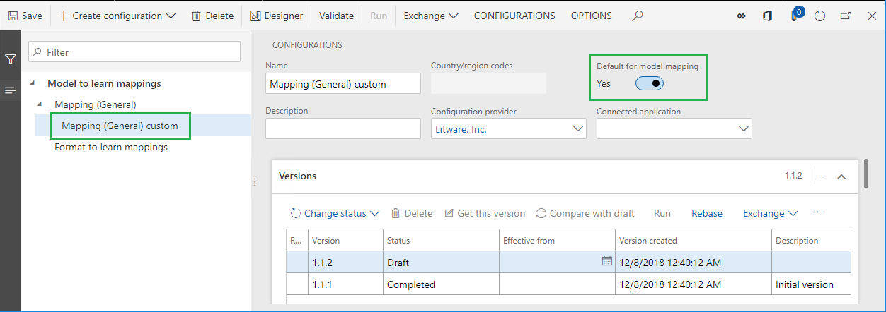
Ausführen des konfigurierten Formats
- Wählen Sie auf der Seite Konfigurationen im Konfigurationsbaum Format, um Zuordnung zu lernen.
- Wählen Sie im Inforegister Versionen Ausführen aus.
- Wählen Sie OK.
Beachten Sie, dass die Ausführung des ausgewählten ER-Formats erfolgreich ist. Der Webbrowser bietet den Download der Textdatei an, die im ausgeführten ER-Format erzeugt wurde. Da dieses Format konfiguriert wurde, um die Definition des Eingangspunkts 1 zu verwenden, und die Konfiguration des Zuordnung (Allgemein) benutzerdefiniert Modellzuordnung als Standardkonfiguration ausgewählt wurde, verwendete das ausgeführte ER-Format die Kopie Zuordnung (Allgemein) Modellzuordnung der Konfiguration Zuordnung (Allgemein) benutzerdefiniert als Datenquelle. Daher enthält die heruntergeladene Datei den Text Generische Funktionalität 1 benutzerdefiniert.
Note
Wenn Sie die Firma, bei der Sie aktuell angemeldet sind, ändern und dieses ER-Format erneut ausführen, erhalten Sie den gleichen Inhalt in der generierten Datei, da die standardmäßige ER-Modellzuordnungskonfiguration keine unternehmensabhängigen Einschränkungen enthält.
Mehrere gemischte Modellzuordnungen Fallbeispiele
Führen Sie die Schritte in Anhang 3 zu diesem Thema aus, um die erforderlichen ER-Komponenten zu entwerfen. Sie haben nun Zuordnung (Allgemein), Zuordnung (Allgemein) benutzerdefiniert und Zuordnung (FR) Modellzuordnung Konfigurationen, die die Modellzuordnung für die Definition von Einstiegspunkt 1 enthalten.
Beachten Sie, dass die Version 1 der Modellzuordnungskonfiguration Zuordnung (FR) so konfiguriert ist, dass sie nur für ER-Formate des Modells gilt, um Zuordnung Modell zu lernen, die in Finance-Firmen ausgeführt werden, die einen französischen Länder/Regionen-Kontext haben.
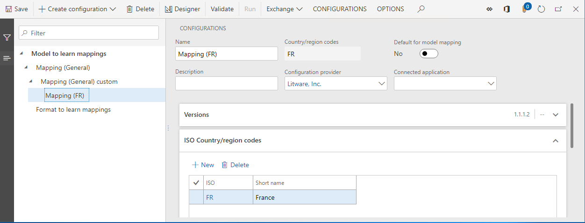
Ausführen des konfigurierten Formats
- Ändern Sie die Firma auf FRSI.
- Wählen Sie auf der Seite Konfigurationen im Konfigurationsbaum Format, um Zuordnung zu lernen.
- Wählen Sie im Inforegister Versionen Ausführen aus.
- Wählen Sie OK.
Beachten Sie, dass die Ausführung des ausgewählten ER-Formats erfolgreich ist. Der Webbrowser bietet den Download der Textdatei an, die durch das ausgeführte ER-Format erzeugt wurde. Da dieses Format konfiguriert wurde, um die Definition des Eingangspunkts 1 zu verwenden, und die Konfiguration des Zuordnung (Allgemein) benutzerdefiniert Modellzuordnung als Standardkonfiguration ausgewählt wurde, verwendete das ausgeführte ER-Format die Kopie Zuordnung (Allgemein) Modellzuordnung der Konfiguration Zuordnung (Allgemein) benutzerdefiniert als Datenquelle. Daher enthält die heruntergeladene Datei den Text Generische Funktionalität 1 benutzerdefiniert.
Definieren Sie die Frankreich-spezifische Zuordnung als Standardkonfiguration.
Führen Sie diese Schritte aus, um die benutzerdefinierte Zuordnung (FR) Modellzuordnungskonfiguration als Standardkonfiguration zu definieren. Beachten Sie, dass diese Zuordnung spezifisch für Frankreich ist und daher als Standardzuordnung zwischen allen Modellzuordnungskonfigurationen betrachtet wird, bei denen der Ländercode FR im Feld ISO Länder-/Regionscodes angegeben ist.
- Wählen Sie auf der Seite Konfigurationen im Konfigurationsbaum Zuordnung (FR).
- Wählen Sie bei Bedarf Bearbeiten, um die aktuelle Seite für die Bearbeitung bereit zu machen.
- Hier können Sie die Option Standard für Modellzuordnung auf Ja festlegen.
- Wählen Sie Speichern.
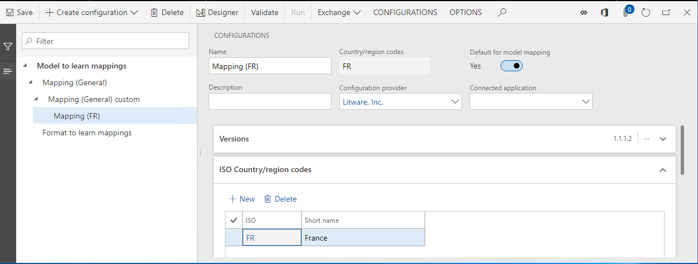
Ausführen des konfigurierten Formats
- Wählen Sie auf der Seite Konfigurationen im Konfigurationsbaum Format, um Zuordnung zu lernen.
- Wählen Sie im Inforegister Versionen Ausführen aus.
- Wählen Sie OK.
Beachten Sie, dass die Ausführung des ausgewählten ER-Formats erfolgreich ist. Der Webbrowser bietet den Download der Textdatei an, die durch das ausgeführte ER-Format erzeugt wurde. Da dieses Format konfiguriert wurde, um die Definition des Eingangspunkts 1 zu verwenden, und die Konfiguration des Zuordnung (FR)-Modellzuordnung als Standardkonfiguration ausgewählt wurde, verwendete das ausgeführte ER-Format das Zuordnung (FR)-Modellzuordnung der Konfiguration des Zuordnung (FR) als Datenquelle. Daher enthält die heruntergeladene Datei den Text FR-Funktionalität 1.
Note
Wenn Sie die Firma, bei der Sie derzeit angemeldet sind, ändern und dieses ER-Format erneut ausführen, hängt die Ausgabe vom Länder-/Regionskontext des ausgewählten Unternehmens ab.
Andere Modellzuordnungsfälle
Wie Sie gesehen haben, funktioniert die Auswahl einer Modellzuordnung für die Ausführung eines ER-Formats wie folgt:
- Die Modellzuordnungsdefinition, die ein ER-Format verwendet, wird angegeben (Eingabepunkt 1 in den Beispielen in diesem Thema).
- Alle Zuordnungskonfigurationen, die eine Zuordnung enthalten, die die angegebene Definition hat und die alle konfigurierten Kontextbeschränkungen für Länder und Regionen erfüllen, können potenziell zur Ausführung des ER-Formats verwendet werden (Zuordnung (Allgemein), Zuordnung (Allgemein) benutzerdefiniert, und Zuordnung (FR) in den Beispielen in diesem Thema).
- Jedes standardmäßige Modellzuordnung mit Kontextbeschränkungen für Länder und Regionen hat die höchste Priorität für die Auswahl (Zuordnung (FR) in den Beispielen in diesem Thema).
- Alle Standardmodellzuordnungen, die keine Kontextbeschränkungen für Länder und Regionen haben, haben die nächsthöhere Priorität für die Auswahl (Zuordnung (Allgemein) benutzerdefiniert).
- Alle Modellzuordnungen, die Kontextbeschränkungen für Länder und Regionen haben, haben eine höhere Priorität für die Auswahl als Modellzuordnungen, die keine Kontextbeschränkungen für Länder und Regionen haben.
Die folgende Tabelle gibt Auskunft über die Ergebnisse der Modellzuordnungsauswahl für alle möglichen Fälle von Modellzuordnungseinstellungen:
- Spalte 1 zeigt an, ob die erste Modellzuordnung, die keine Kontextbeschränkungen für Länder/Regionen aufweist (z.B. die gemeinsame Zuordnung Zuordnung (Allgemein)) dargestellt wird und, wenn ja, ob die Option Standard für Modellzuordnung auf Ja gesetzt ist.
- Spalte 2 zeigt an, ob die zweite Modellabbildung, die keine Kontextbeschränkungen für Länder/Regionen aufweist (z.B. die gemeinsame Zuordnung (allgemein) benutzerdefiniert Zuordnung), dargestellt wird und, wenn ja, ob die Option Standard für Zuordnung auf Ja für sie gesetzt ist.
- Spalte 3 zeigt an, ob die erste Modellzuordnung mit Kontextbeschränkungen für Land/Region A (z.B. das Frankreich-spezifische Zuordnung (FR) Zuordnung) dargestellt wird und, wenn ja, ob die Option Standard für Modellzuordnung auf Ja gesetzt ist.
- Spalte 4 zeigt an, ob die zweite Modellzuordnung mit Kontextbeschränkungen für Land/Region A dargestellt wird und, wenn ja, ob die Option Standard für Modellzuordnung auf Ja für sie gesetzt ist.
- Spalte 5 zeigt das Ergebnis einer Modellzuordnungsauswahl für die Ausführung eines ER-Formats unter der Kontrolle eines Unternehmens, das einen Kontext zwischen Land und Region A hat.
- Spalte 6 zeigt das Ergebnis einer Modellzuordnungsauswahl für die Ausführung eines ER-Formats unter der Kontrolle eines Unternehmens, das den Kontext Land / Region B hat.
In der Tabelle zeigt ein Pluszeichen (+) das Vorhandensein einer Modellzuordnungskonfiguration in der aktuellen Instanz des Dienstes Microsoft Azure an, der zum Ausführen eines ER-Formats (entweder Finance oder RCS) verwendet wird.
| Behälter | Modellzuordnung 1 ohne Länder-/Regionskontext (MM1) | Modellzuordnung 2 ohne Länder-/Regionskontext (MM2) | Modellzuordnung 1 mit Land/Region A Kontext (MM1A) | Modellzuordnung 2 mit Land/Region A-Kontext (MM2A) | Unter der Kontrolle eines Unternehmens ausführen, das einen Kontext zwischen Land/Region A hat. | Unter der Kontrolle eines Unternehmens ausführen, das den Kontext Land / Region B hat. |
|---|---|---|---|---|---|---|
| 1 | 2 | 3 | 4 | 5 | 6 | |
| 1 | Fehler (fehlende Zuordnung) | Fehler (fehlende Zuordnung) | ||||
| 2 | + | MM1 | MM1 | |||
| 3 | + | + | Fehler (mehrere Zuordnungen) | Fehler (mehrere Zuordnungen) | ||
| 4 | + | + | MM1A | MM1 | ||
| 5 | + | + | + | Fehler (mehrere Zuordnungen) | MM1 | |
| 6 | + | Standard | + | + | MM2 | MM2 |
| 7 | + | Standard | MM1A | MM1 | ||
| 8 | + | Standard | + | MM1A | MM1 | |
| 9 | + | Standard | Standard | Fehler (mehrere Zuordnungen) | MM1 | |
| 10 | Standard | MM1 | MM1 | |||
| 11 | Standard | + | MM1 | MM1 | ||
| 12 | Standard | + | MM1 | MM1 | ||
| 13 | Standard | Standard | Fehler (mehrere Zuordnungen) | Fehler (mehrere Zuordnungen) | ||
| 14 | Standard | Standard | MM1A | MM1 | ||
| 15 | Standard | Standard | Standard | MM1A | MM2A | |
| 16 | + | + | MM1A | MM2A | ||
| 17 | Standard | Standard | MM1A | MM2A |
Erfahren Sie, mit welcher Zuordnung ein ER-Format ausgeführt wurde.
Benutzerparameter der elektronischen Berichterstellung konfigurieren
- Wählen Sie auf der Seite Konfigurationen, im Aktionsbereich, auf der Registerkarte KONFIGURATIONEN Benutzerparameter.
- Legen Sie die Option In Debugmodus ausführen auf Ja fest.
- Wählen Sie Ok.
Ausführen des konfigurierten Formats
- Wählen Sie auf der Seite Konfigurationen im Konfigurationsbaum Format, um Zuordnung zu lernen.
- Wählen Sie im Inforegister Versionen Ausführen aus.
- Wählen Sie Ok.
Überprüfen Sie das ER-Debug-Protokoll.
- Gehen Sie im Navigationsbereich zu Module > Organisationsverwaltung > Elektronische Berichterstattung > Konfiguration Debug-Log.
- Wählen Sie die Schaltfläche Diese Seite neu laden.
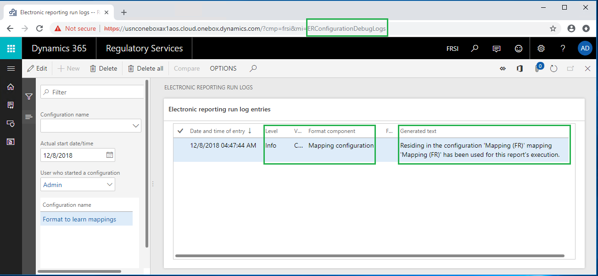
Beachten Sie, dass dem ER-Debug-Protokoll für das ausgeführte ER-Format ein neuer Datensatz hinzugefügt wurde. Da das Feld Level dieses Datensatzes auf Info gesetzt ist, ist der Datensatz informativ. Da das Feld Formatkomponente auf Zuordnugnskonfiguration gesetzt ist, informiert Sie der Datensatz über ein Model-Zuordnung, das während der Ausführung des Formats zum Erlernen von Zuordnungen ER-Format verwendet wurde (ausgewählt im Feld Konfigurationsname). Der Inhalt des Feldes Generierter Text informiert Sie darüber, dass die Zuordnungs-Komponente Zuordnung (FR), die sich in der Konfiguration Zuordnung (FR) befindet, zur Ausführung dieses Berichts verwendet wurde.
Anhang 1
Konfigurieren eines Beispieldatenmodells
Melden Sie sich bei Ihrer RCS-Instanz an.
In diesem Beispiel erstellen Sie eine Konfiguration für die Musterfirma Litware, Inc. Um diese Schritte abzuschließen, müssen Sie zunächst im RCS die Schritte in der Prozedur Anlegen eines Konfigurationsanbieters durchführen und ihn als aktiv markieren.
Erstellen einer ER-Datenmodell-Konfiguration
- Wählen Sie im Standard-Dashboard Elektronische Berichterstellung aus.
- Wählen Sie die Kachel Berichtskonfigurationen.
- Wählen Sie auf der Seite Konfigurationen Konfiguration erstellen.
- Geben Sie im Dropdown-Dialogfeld im Feld Name Modell ein, um Zuordnungen zu lernen.
- Wählen Sie Konfiguration erstellen.
- Wählen Sie die Option Konfigurationskomponenten Inforegister.
Beachten Sie, dass der Entwurf der Version 1 dieser ER-Konfiguration zur Bearbeitung bereit ist. Diese Version enthält die Datenmodellkomponente.
Entwurf eines Beispieldatenmodells
Wählen Sie auf der Seite Konfigurationen Designer.
Wählen Sie Neu aus.
Geben Sie im Dropdown-Dialogfeld im Feld Name Eingabepunkt 1 ein.
Wählen Sie Hinzufügen aus.
Wählen Sie Neu aus.
Geben Sie im Dropdown-Dialogfeld im Feld Name Funktionsbeschreibung ein.
Wählen Sie Hinzufügen aus.
Wählen Sie Neu aus.
Wählen Sie im Dropdown-Dialogfeld in der Feldgruppe Neuer Knoten die Option Modellstamm.
Geben Sie im Feld Name Eingabepunkt 2 ein.
Wählen Sie Eingabepunkt 2.
Wählen Sie Hinzufügen aus.
Wählen Sie Neu aus.
Geben Sie im Dropdown-Dialogfeld im Feld Name Funktionsbeschreibung ein.
Wählen Sie Hinzufügen aus.
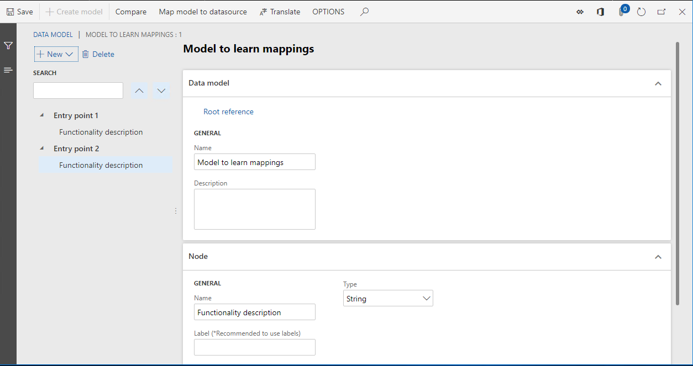
Wählen Sie Speichern.
Schließen Sie die Seite.
Vervollständigen Sie die modifizierte Version der Modellkonfiguration.
Wählen Sie auf der Seite Konfigurationen, auf der Seite Versionen Inforegister Status ändern.
Ändern Sie den Status der entworfenen Modellkonfiguration von Entwurf auf Erledigt, so dass damit die erforderlichen Modellzuordnungen und Formate entworfen werden können.
Wählen Sie Abgeschlossen aus.
Wählen Sie OK.
Beachten Sie, dass die von Ihnen erstellte Konfiguration als fertige Version 1 gespeichert wird.
Konfigurieren einer exemplarischen Modellzuordnung
Erstellen einer ER-Modellzuordnung Konfiguration
- Wählen Sie auf der Seite Konfigurationen Konfiguration erstellen.
- Wählen Sie im Dropdown-Dialogfeld in der Feldgruppe Neu die Option Modellzuordnung basierend auf dem Datenmodell Modell, um Zuordnungen zu lernen.
- Geben Sie im Feld Name Zuordnung (Allgemein) ein.
- Wählen Sie im Feld Datenmodelldefinition Eingabepunkt 1.
- Wählen Sie Konfiguration erstellen.
Beachten Sie, dass der Entwurf der Version 1 dieser ER-Konfiguration zur Bearbeitung bereit ist. Diese Version enthält die Modellzuordnungskomponente.
Entwurf einer exemplarischen Modellzuordnung
Wählen Sie auf der Seite Konfigurationen die Option Designer aus.
Beachten Sie, dass die Modellzuordnung des Richtungstyps Zum Modell für die Definition von Eingangspunkt 1 automatisch zu dieser Komponente hinzugefügt wurde.
Wählen Sie Designer, um mit der Bearbeitung der hinzugefügten Modellzuordnung zu beginnen.
Wählen Sie im Abschnitt Datenmodell Bearbeiten.
Geben Sie im Feld Formel „Generische Funktionalität 1“ ein.
Wählen Sie Speichern.
Schließen Sie die Seite Formeldesigner.
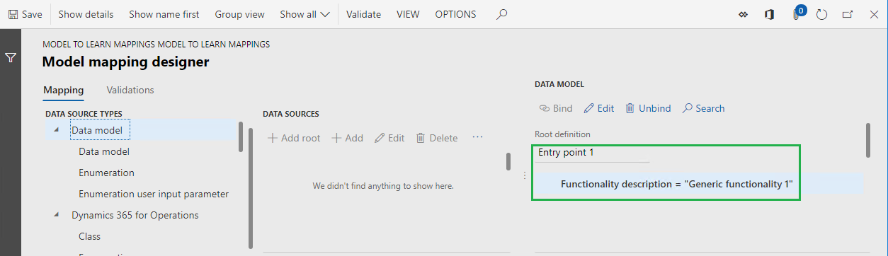
Wählen Sie Speichern.
Schließen Sie die Seite Modellzuordnungsdesigner.
Wählen Sie Neu aus.
Wählen Sie im Feld Definition Eingabepunkt 2.
Geben Sie im Feld Name Zuordnung (Allgemein) 2 ein.
Wählen Sie Designer aus.
Wählen Sie im Abschnitt Datenmodell Bearbeiten.
Geben Sie im Feld Formel „Generische Funktionalität 2“ ein.
Wählen Sie Speichern.
Schließen Sie die Seite Formeldesigner.
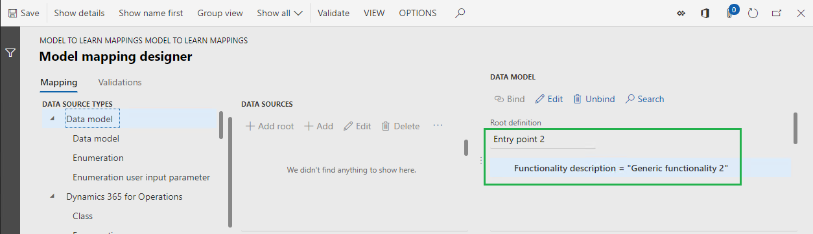
Wählen Sie Speichern.
Schließen Sie die Seite Modellzuordnungsdesigner.
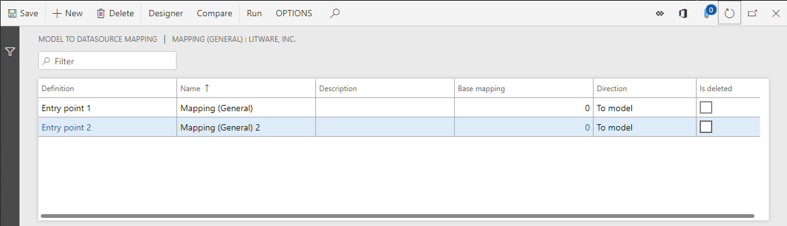
Schließen Sie die Seite Modellzuordnungen.
Vervollständigen Sie die modifizierte Version der Modellzuordnungskonfiguration.
Wählen Sie auf der Seite Konfigurationen, auf der Seite Versionen Inforegister Status ändern.
Ändern Sie den Status der Konfiguration der entworfenen Modellzuordnung von Entwurf auf Abgeschlossen, so dass sie von ER-Formaten verwendet werden kann.
Wählen Sie Abgeschlossen aus.
Wählen Sie OK.
Beachten Sie, dass die erstellte Konfiguration als fertige Version 1 gespeichert wird.
Konfigurieren eines Beispielformats
Erstellen einer ER-Format-Konfiguration
- Wählen Sie auf der Seite Konfigurationen im Konfigurationsbaum Modell, um Zuordnungen zu lernen.
- Wählen Sie Konfiguration erstellen.
- Wählen Sie im Dropdown-Dialogfeld in der Feldgruppe Neu die Option Format basierend auf dem Datenmodell Modell, um Zuordnungen zu lernen.
- Geben Sie im Feld Name Format ein, um Zuordnungen zu lernen.
- Wählen Sie im Feld Datenmodelldefinition Eingabepunkt 1.
- Wählen Sie Konfiguration erstellen.
Beachten Sie, dass der Entwurf der Version 1 dieser ER-Konfiguration zur Bearbeitung bereit ist. Diese Version enthält die Formatkomponente.
Entwurf eines Musterformats
- Wählen Sie auf der Seite Konfigurationen die Option Designer aus.
- Wählen Sie Stamm hinzufügen aus.
- Wählen Sie in der Gruppe Text das Element String.
- Wählen Sie OK.
Binden von Formatelementen an eine Datenquelle
Erweitern Sie auf der Seite Format Designer, auf der Registerkarte Zuordnung die Modelldatenquelle.
Wählen Sie das Feld Funktionsbeschreibung.
Wählen Sie Bindung aus.
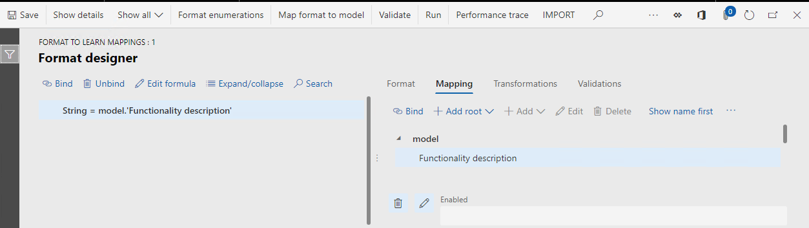
Wählen Sie Speichern.
Schließen Sie die Seite.
Anhang 2
Konfigurieren einer exemplarischen Modellzuordnung für allgemeine Anpassungen
Möglicherweise möchten Sie eine Modellzuordnung anpassen, die Ihnen ein Konfigurationsanbieter (Partner) zur Verfügung gestellt hat, und dann die angepasste Version als Datenquelle für Ihre ER-Formate verwenden. In diesem Fall müssen Sie eine benutzerdefinierte ER-Modellzuordnungskonfiguration erstellen, um die erforderlichen Änderungen an bestehenden Modellzuordnungen vorzunehmen. Die Verfahren in diesem Anhang verwenden als Beispiel das Zuordnung (Allgemein) Modellzuordnung.
Erstellen einer ER-Modellzuordnung Konfiguration
- Wählen Sie auf der Seite Konfigurationen im Konfigurationsbaum Zuordnung (Allgemein).
- Wählen Sie Konfiguration erstellen.
- Wählen Sie im Dropdown-Dialogfeld in der Feldgruppe Neu die Option Aus Name ableiten: Zuordnung (Allgemein), Litware, Inc..
- Geben Sie im Feld Name Zuordnung (Allgemein) benutzerdefiniert ein.
- Wählen Sie Konfiguration erstellen.
Beachten Sie, dass der Entwurf der Version 1 dieser ER-Konfiguration zur Bearbeitung bereit ist.
Entwurf einer exemplarischen Modellzuordnung
Wählen Sie auf der Seite Konfigurationen die Option Designer aus.
Beachten Sie, dass die Modellzuordnungen der Basiskonfiguration automatisch in diese Konfiguration kopiert wurden.
Wählen Sie die Zuordnung Zuordnung (Allgemein) Kopie.
Wählen Sie Designer aus.
Wählen Sie im Abschnitt Datenmodell Bearbeiten.
Geben Sie im Feld Formel „Allgemeine Funktionalität 1 benutzerdefiniert“ ein.
Wählen Sie Speichern.
Schließen Sie die Seite.
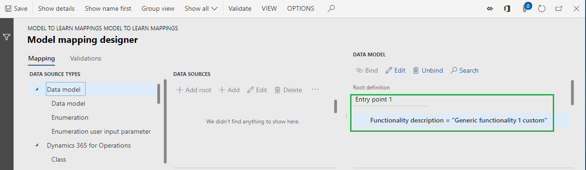
Wählen Sie Speichern.
Schließen Sie die Seite.
Wählen Sie die Zuordnung Zuordnung (Allgemein) 2 Kopie Zuordnung.
Wählen Sie Designer aus.
Wählen Sie im Abschnitt Datenmodell Bearbeiten.
Geben Sie im Feld Formel „Allgemeine Funktionalität 2 benutzerdefiniert“ ein.
Wählen Sie Speichern.
Schließen Sie die Seite.
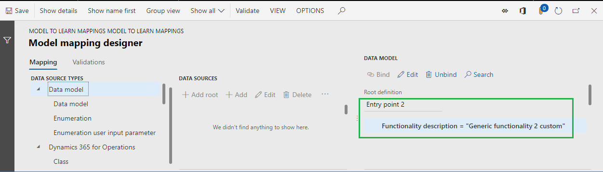
Wählen Sie Speichern.
Schließen Sie die Seite.
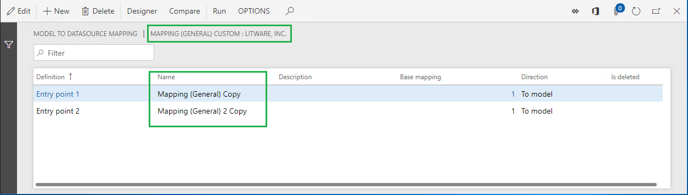
Schließen Sie die Seite.
Vervollständigen Sie die modifizierte Version der Modellzuordnungskonfiguration.
Wählen Sie auf der Seite Konfigurationen, auf der Seite Versionen Inforegister Status ändern.
Ändern Sie den Status der Konfiguration der entworfenen Modellzuordnung von Entwurf auf Abgeschlossen, so dass sie von ER-Formaten verwendet werden kann.
Wählen Sie Abgeschlossen aus.
Wählen Sie OK.
Beachten Sie, dass die erstellte Konfiguration als fertige Version 1 gespeichert wird.
Anhang 3
Konfigurieren Sie eine Mustermodellzuordnung für länder- und regionalspezifische Anpassungen.
Für einige ER-Formate gibt es möglicherweise länderspezifische Anforderungen an die Datenaufbereitung. In diesem Fall können Sie eine separate ER-Modellzuordnungskonfiguration verwalten und die Umsetzung dieser länder- und regionalspezifischen Anforderungen von der allgemeinen Implementierung trennen. Die Verfahren in diesem Anhang verwenden das Format, um Zuordnungen zu lernen ER-Format und französisch-spezifische Anforderungen als Beispiel.
Erstellen einer ER-Modellzuordnung Konfiguration
Erstellen Sie zunächst eine neue ER-Modellzuordnungskonfiguration, um die länder- und regionalspezifischen Anforderungen zu implementieren. Verwenden Sie Ihre benutzerdefinierte ER-Modellzuordnungskonfiguration als Basis.
- Wählen Sie auf der Seite Konfigurationen im Konfigurationsbaum Zuordnung (Allgemein) benutzerdefiniert.
- Wählen Sie Konfiguration erstellen.
- Wählen Sie im Dropdown-Dialogfeld in der Feldgruppe Neu die Option Aus Name ableiten: Zuordnung (allgemein) benutzerdefiniert, Litware, Inc.
- Geben Sie im Feld Name Zuordnung(FR) ein.
- Wählen Sie Konfiguration erstellen.
Beachten Sie, dass der Entwurf der Version 1 dieser ER-Konfiguration zur Bearbeitung bereit ist.
Entwurf einer exemplarischen Modellzuordnung
Wählen Sie auf der Seite Konfigurationen die Option Designer aus.
Beachten Sie, dass Modell-Zuordnungs der Basiskonfiguration automatisch in diese Konfiguration kopiert wurden.
Wählen Sie die Zuordnung Zuordnung(Allgemein) Kopie Kopie.
Benennen Sie es um Zuordnung (FR).
Wählen Sie Designer aus.
Wählen Sie im Abschnitt Datenmodell Bearbeiten.
Geben Sie im Feld Formel „FR Funktionalität 1“ ein.
Wählen Sie Speichern.
Schließen Sie die Seite.
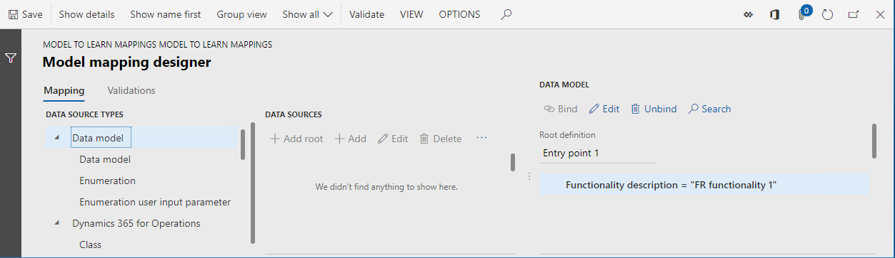
Wählen Sie Speichern.
Schließen Sie die Seite.
Wählen Sie die Zuordnung Zuordnung (Allgemein) 2 Kopie Kopie Kopie.
Benennen Sie es um Zuordnung (FR) 2.
Wählen Sie Designer aus.
Wählen Sie im Abschnitt Datenmodell Bearbeiten.
Geben Sie im Feld Formel „FR-Funktionalität 2“ ein.
Wählen Sie Speichern.
Schließen Sie die Seite.
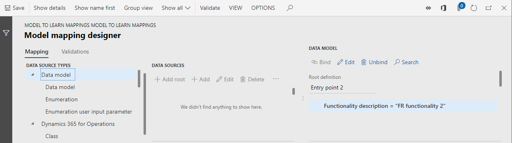
Wählen Sie Speichern.
Schließen Sie die Seite.
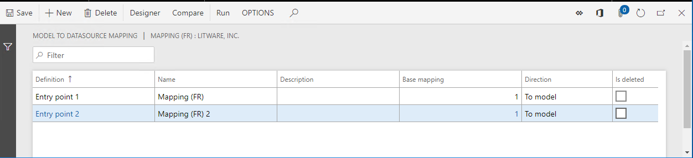
Schließen Sie die Seite.
Spezifizieren Sie Kontextbeschränkungen für Länder/Regionen für die Verwendung.
- Wählen Sie auf der Seite Konfigurationen, auf der Seite ISO Länder-/Regionscodes Inforegister Neu.
- Wählen Sie im Feld ISO FR.
- Wählen Sie Speichern.
Beachten Sie, dass Sie sich bei einer bestimmten Firma in Finance anmelden müssen, um ein ER-Format auszuführen. Daher kann dieses Unternehmen als eine Partei betrachtet werden, die sowohl die Ausführung des ER-Formats als auch die Auswahl des richtigen ER-Modells für die Zuordnung des Basis-ER-Datenmodells steuert. Durch Hinzufügen des Ländercodes FR legen Sie fest, dass diese Modellzuordnung nur dann zur Auswahl durch ein ER-Format des Basisdatenmodells zur Verfügung steht, wenn dieses Format unter der Kontrolle eines Unternehmens mit französischem Länder/Regionalkontext ausgeführt wird.
Sie können mehrere Länder-/Regionscodes für eine einzelne Version einer ER-Modellzuordnungskonfiguration hinzufügen. Auf diese Weise können Modellzuordnungen, die sich in dieser Modellzuordnungskonfiguration befinden, für ein ER-Format verwendet werden, das unter der Kontrolle von Unternehmen mit einem anderen Länder-/Regionskontext ausgeführt wird.
Beachten Sie, dass die Liste der Länder-/Regionscodes für jede Version einer ER-Modellzuordnungskonfiguration angegeben ist und von Version zu Version variieren kann.
Vervollständigen Sie die modifizierte Version der Modellzuordnungskonfiguration.
Wählen Sie auf der Seite Konfigurationen, auf der Seite Versionen Inforegister Status ändern.
Ändern Sie den Status der Konfiguration der entworfenen Modellzuordnung von Entwurf auf Abgeschlossen, so dass sie von ER-Formaten verwendet werden kann.
Wählen Sie Abgeschlossen aus.
Wählen Sie OK.
Beachten Sie, dass die erstellte Konfiguration als fertige Version 1 gespeichert wird.
Zusätzliche Ressourcen
Überblick über die elektronische Berichterstellung (Electronic reporting, ER)
ER-Modellzuordnungen in separaten ER-Konfigurationen verwalten
Landes-/Regionskontext anwenden (This is an external link)
Häufig gestellte Fragen
Ich habe zwei gemeinsame ER-Modellzuordnungskonfigurationen in RCS konfiguriert und eine davon als Standardmodellzuordnungskonfiguration markiert. Ich habe erfolgreich ein ER-Format ausgeführt, das für die gleiche Basis-ER-Datenmodellkonfiguration erstellt wurde, um Modellzuordnungen zu testen. Dann importierte ich die gesamte ER-Lösung (ER-Datenmodell, zwei ER-Modellzuordnungskonfigurationen und ER-Format-Konfiguration) in Finance. Warum erhalte ich eine Fehlermeldung, wenn ich versuche, das gleiche ER-Format in Finance auszuführen?
Die Standardeinstellung für die Modellzuordnung ist umgebungsspezifisch. Es ist in RCS konfiguriert, wird aber nicht nach Finance exportiert. Um dieses ER-Format erfolgreich ausführen zu können, müssen Sie auch in Finance eine der ER-Modellzuordnungskonfigurationen als Standard-Modellzuordnungskonfiguration markieren.
Ich habe eine Modellzuordnung als Shared Model Zuordnung konfiguriert und den Entwurf der Version abgeschlossen. Dann habe ich eine neue Modellzuordnungskonfiguration für dasselbe Datenmodell hinzugefügt und als französisch-spezifisch konfiguriert. Warum wird das Shared Model Zuordnung ausgewählt, wenn ich ein ER-Format verwende, obwohl dieses ER-Format die richtige Root-Definition verwendet und die Ausführung unter der Kontrolle des Unternehmens erfolgt, das den französischen Länder/Regionen-Kontext hat?
Stellen Sie sicher, dass die Konfiguration der gemeinsamen Modellzuordnung nicht als Standardkonfiguration der Modellzuordnung gekennzeichnet ist. Andernfalls hat es bei der Zuordnungsauswahl eine höhere Priorität. Stellen Sie außerdem sicher, dass die französisch-spezifische Modellzuordnungskonfiguration berücksichtigt wird, wenn während der Ausführung des ER-Formats eine Zuordnung ausgewählt wird. Eine ER-Modellzuordnungskonfiguration steht nur dann zur Auswahl, wenn mindestens eine der folgenden Bedingungen erfüllt ist:
- Mindestens eine Version der ER-Modellzuordnungskonfiguration hat entweder den Status Abgeschlossen oder Gemeinsam. In diesem Fall wird die Version mit der höchsten Versionsnummer für die Ausführung des ER-Formats verwendet.
- Die Option Entwurf ausführen für die Konfiguration der ER-Modellzuordnung ist aktiviert. In diesem Fall wird die Version mit dem Status Entwurf für die Ausführung des ER-Formats verwendet.
Die Option Entwurf ausführen wird auf der Seite Konfigurationen für jede ER-Modellzuordnungskonfiguration verfügbar, wenn der Benutzerparameter Einstellung ausführen ER eingeschaltet ist.